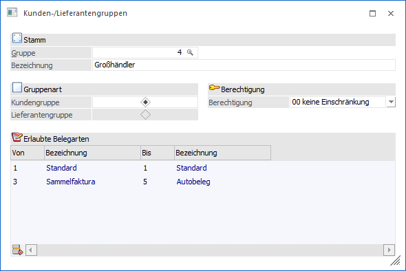
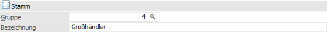
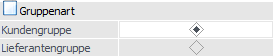
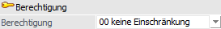
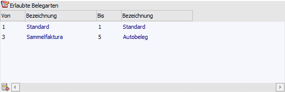
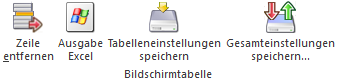
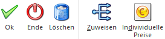

Die Kunden- und Lieferantengruppen können über…
1 WinLine FAKT
1 Stammdaten
1 Gruppenanlage
1 Kunden-/Lieferanten
… angelegt werden und können u.a. in folgenden Bereichen genutzt werden:
ü als Auswertekennzeichen im Listgenerator vom WinLine LIST
ü als Steuerungselement für kundengruppenspezifische Preise
ü zur Definition von Belegarten, welche pro Kunden-/Lieferantengruppe verwendet werden dürfen

Stamm

Ø Gruppe
An dieser Stelle erfolgt die Hinterlegung der Gruppennummer (0 bis 999) für die Kunden- bzw. Lieferantengruppe.
Ø Bezeichnung
In diesem Feld kann eine maximal 40stellige Bezeichnung für die Gruppe eingetragen werden.
Gruppenart

Ø Kundengruppe / Lieferantengruppe
Hier kann entschieden werden, ob es sich bei der Gruppe um eine Kundengruppe oder um eine Lieferantengruppe handelt. Wird in der weiteren Folge bei einem Personenkonto eine Kunden- oder Lieferantengruppe hinterlegt, so wird geprüft, ob es sich bei Debitoren um eine Kundengruppe bzw. bei Kreditoren um eine Lieferantengruppe handelt.
Hinweis
Die Entscheidung, ob es sich um eine Kunden- oder Lieferantengruppe handelt, wird bei der Anlage einer Gruppe getroffen und ist nicht änderbar.
Berechtigung

Ø Berechtigung
Für jede Kunden- / Lieferantengruppe kann ein Berechtigungsprofil vergeben werden. Wenn der Anwender eine Gruppe aufruft, wird geprüft, ob der Anwender einer Benutzergruppe zugeordnet wurde, welche in dem jeweiligen Profil enthalten ist und ob somit eine Bearbeitung erlaubt wäre (nähere Informationen entnehmen Sie bitte dem WinLine ADMIN - Handbuch).
Hinweis
Benutzern des Typs "Administrator" oder mit der Administratorenberechtigung "Benutzeradministrator" steht in der Auswahlbox der Punkt ">> Neues Profil" zur Verfügung. Über die Anwahl dieses Eintrags kann in der Folge ein neues Berechtigungsprofil angelegt werden.
Tabelle "Erlaubte Belegarten"

In dieser Tabelle kann definiert werden, welche Belegarten für diese Kunden- / Lieferantengruppe verwendet werden darf. Dadurch kann gesteuert werden, dass für gewisse Kunden- bzw. Lieferantengruppen bestimmte Artikel nicht erfasst werden dürfen (Register "Art.gruppen" im Belegartenstamm).
Ø Belegart von / bis
In den Feldern "von" und "bis" kann jeweils der Bereich der Belegarten eingegeben werden, der für diese Kunden- / Lieferantengruppe zulässig ist.
Achtung
Bleibt die Tabelle leer, so sind alle Belegarten für die Gruppe erlaubt!
Tabellenbutton

Ø Zeile entfernen
Durch Anklicken des Buttons "Zeile entfernen" kann die gerade aktive Zeile aus der Tabelle gelöscht werden.
Ø Ausgabe Excel
Durch Anwahl des Buttons "Ausgabe Excel" wird der Inhalt der Tabelle nach Microsoft Excel übergeben.
Ø Tabelleneinstellungen speichern
Die Spalten einer Tabelle können grundsätzlich an beliebige Positionen verschoben, bzw. in der Breite entsprechend angepasst werden. Durch Anwahl des Buttons "Tabelleneinstellungen speichern" werden die Einstellungen benutzerspezifisch gespeichert und bei dem nächsten Aufruf des Programmpunktes wieder vorgeschlagen.
Ø Gesamteinstellungen speichern…
Im Gegensatz zu "Tabelleneinstellungen speichern" können mit "Gesamteinstellungen speichern" mehrere Tabellenaufbauten gespeichert und nach Wunsch geladen werden. Zusätzlich werden Sonderfunktionen der Tabelle (z.B. "Spalte gruppieren") ebenfalls bei der Speicherung bedacht.
Buttons

Ø Ok
Durch Drücken des Buttons "Ok" bzw. der Taste F5 werden die Eingaben gespeichert.
Ø Ende
Durch Anwahl des Buttons "Ende" bzw. der Taste ESC wird das Fenster geschlossen und alle nicht gespeicherten Änderungen verworfen.
Ø Löschen
Durch Anklicken des Buttons "Löschen" kann die Kunden- / Lieferantengruppen gelöscht werden. Hierfür sind folgende Voraussetzungen zu erfüllen:
ü die Kundengruppe darf in keinem Personenkonto zugeordnet sein
ü für die Gruppe darf kein gruppenspezifischer Preis erfasst worden sein
ü für die Gruppe darf kein Kontrakt erfasst worden sein
Ø Zuweisen
Durch Anklicken dieses Buttons kann auf einfache Art und Weise eine Kunden- / Lieferantengruppe zu bestehenden Konten zugeordnet werden (nähere Information entnehmen Sie bitte dem Kapitel Zuweisung).
Ø Individuelle Preise
Durch Anklicken des Buttons "Individuelle Preise" können individuelle Preise bzw. Rabatte für die Kunden- / Lieferantengruppe hinterlegt werden (nähere Information entnehmen Sie bitte dem Kapitel Individuelle Preise).